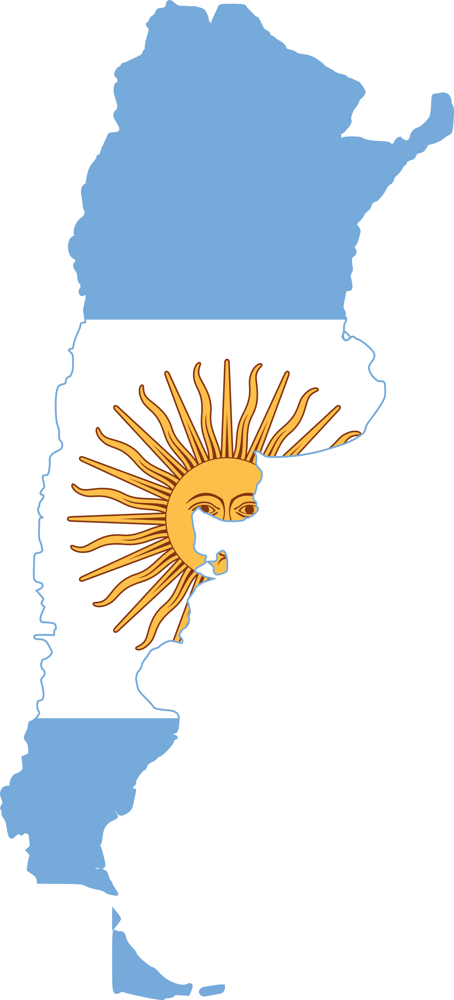

<!DOCTYPE html>
<head>    
    <meta http-equiv="content-type" content="text/html; charset=UTF-8" />
    
        <script>
            L_NO_TOUCH = false;
            L_DISABLE_3D = false;
        </script>
    
    <style>html, body {width: 100%;height: 100%;margin: 0;padding: 0;}</style>
    <style>#map {position:absolute;top:0;bottom:0;right:0;left:0;}</style>
    <script src="https://cdn.jsdelivr.net/npm/leaflet@1.6.0/dist/leaflet.js"></script>
    <script src="https://code.jquery.com/jquery-1.12.4.min.js"></script>
    <script src="https://maxcdn.bootstrapcdn.com/bootstrap/3.2.0/js/bootstrap.min.js"></script>
    <script src="https://cdnjs.cloudflare.com/ajax/libs/Leaflet.awesome-markers/2.0.2/leaflet.awesome-markers.js"></script>
    <link rel="stylesheet" href="https://cdn.jsdelivr.net/npm/leaflet@1.6.0/dist/leaflet.css"/>
    <link rel="stylesheet" href="https://maxcdn.bootstrapcdn.com/bootstrap/3.2.0/css/bootstrap.min.css"/>
    <link rel="stylesheet" href="https://maxcdn.bootstrapcdn.com/bootstrap/3.2.0/css/bootstrap-theme.min.css"/>
    <link rel="stylesheet" href="https://maxcdn.bootstrapcdn.com/font-awesome/4.6.3/css/font-awesome.min.css"/>
    <link rel="stylesheet" href="https://cdnjs.cloudflare.com/ajax/libs/Leaflet.awesome-markers/2.0.2/leaflet.awesome-markers.css"/>
    <link rel="stylesheet" href="https://cdn.jsdelivr.net/gh/python-visualization/folium/folium/templates/leaflet.awesome.rotate.min.css"/>
    
            <meta name="viewport" content="width=device-width,
                initial-scale=1.0, maximum-scale=1.0, user-scalable=no" />
            <style>
                #map_d2843e3a4ee13925b94fa089f82033c7 {
                    position: relative;
                    width: 100.0%;
                    height: 100.0%;
                    left: 0.0%;
                    top: 0.0%;
                }
            </style>
        
    <script src="https://cdnjs.cloudflare.com/ajax/libs/leaflet.markercluster/1.1.0/leaflet.markercluster.js"></script>
    <link rel="stylesheet" href="https://cdnjs.cloudflare.com/ajax/libs/leaflet.markercluster/1.1.0/MarkerCluster.css"/>
    <link rel="stylesheet" href="https://cdnjs.cloudflare.com/ajax/libs/leaflet.markercluster/1.1.0/MarkerCluster.Default.css"/>
    <script src="https://cdnjs.cloudflare.com/ajax/libs/leaflet-minimap/3.6.1/Control.MiniMap.js"></script>
    <link rel="stylesheet" href="https://cdnjs.cloudflare.com/ajax/libs/leaflet-minimap/3.6.1/Control.MiniMap.css"/>
    <script src="https://cdnjs.cloudflare.com/ajax/libs/leaflet-locatecontrol/0.66.2/L.Control.Locate.min.js"></script>
    <link rel="stylesheet" href="https://cdnjs.cloudflare.com/ajax/libs/leaflet-locatecontrol/0.66.2/L.Control.Locate.min.css"/>
    <script src="https://cdnjs.cloudflare.com/ajax/libs/leaflet.fullscreen/1.4.2/Control.FullScreen.min.js"></script>
    <link rel="stylesheet" href="https://cdnjs.cloudflare.com/ajax/libs/leaflet.fullscreen/1.4.2/Control.FullScreen.min.css"/>
</head>
<body>    
    
            <div class="folium-map" id="map_d2843e3a4ee13925b94fa089f82033c7" ></div>
        
</body>
<script>    
    
            var map_d2843e3a4ee13925b94fa089f82033c7 = L.map(
                "map_d2843e3a4ee13925b94fa089f82033c7",
                {
                    center: [-32.9479, -60.629752],
                    crs: L.CRS.EPSG3857,
                    zoom: 12,
                    zoomControl: true,
                    preferCanvas: false,
                }
            );
            L.control.scale().addTo(map_d2843e3a4ee13925b94fa089f82033c7);

            

        
    
            var tile_layer_bdce4868f95a0cbf9d03e390a1fddaeb = L.tileLayer(
                "https://{s}.tile.openstreetmap.org/{z}/{x}/{y}.png",
                {"attribution": "Data by \u0026copy; \u003ca href=\"http://openstreetmap.org\"\u003eOpenStreetMap\u003c/a\u003e, under \u003ca href=\"http://www.openstreetmap.org/copyright\"\u003eODbL\u003c/a\u003e.", "detectRetina": false, "maxNativeZoom": 18, "maxZoom": 18, "minZoom": 0, "noWrap": false, "opacity": 1, "subdomains": "abc", "tms": false}
            ).addTo(map_d2843e3a4ee13925b94fa089f82033c7);
        
    
            var feature_group_823936b394ffad7bf484bec5e5027c4e = L.featureGroup(
                {}
            ).addTo(map_d2843e3a4ee13925b94fa089f82033c7);
        
    
            var marker_cluster_b084abb143e33aed84782a2c2b54495f = L.markerClusterGroup(
                {}
            );
            feature_group_823936b394ffad7bf484bec5e5027c4e.addLayer(marker_cluster_b084abb143e33aed84782a2c2b54495f);
        
    
            var marker_5ee2d358731019d87eea4ac435fa8203 = L.marker(
                [-38.416097, -63.616672],
                {}
            ).addTo(marker_cluster_b084abb143e33aed84782a2c2b54495f);
        
    
            var icon_7be19be11b5bd0bce94eacaa513d339a = L.AwesomeMarkers.icon(
                {"extraClasses": "fa-rotate-0", "icon": "glyphicon glyphicon-globe", "iconColor": "white", "markerColor": "red", "prefix": "glyphicon"}
            );
            marker_5ee2d358731019d87eea4ac435fa8203.setIcon(icon_7be19be11b5bd0bce94eacaa513d339a);
        
    
        var popup_12c91ce9219cb97d165c0ef479bcb117 = L.popup({"maxWidth": 500, "minWidth": 200});

        
            var html_58fea7e06adb4de4994c3b6091d7bba9 = $(`<div id="html_58fea7e06adb4de4994c3b6091d7bba9" style="width: 100.0%; height: 100.0%;"><center><h2>Argentina</h2></center><br/>                       <center> <center/><br>                       <p>País sudamericano de gran envergadura con un terreno que incluye las montañas de los Andes, lagos glaciales y praderas en las Pampas, la tierra tradicional de pastoreo de su famoso ganado. El país es conocido por el baile y la música del tango.</b><br/></div>`)[0];
            popup_12c91ce9219cb97d165c0ef479bcb117.setContent(html_58fea7e06adb4de4994c3b6091d7bba9);
        

        marker_5ee2d358731019d87eea4ac435fa8203.bindPopup(popup_12c91ce9219cb97d165c0ef479bcb117)
        ;

        
    
    
            marker_5ee2d358731019d87eea4ac435fa8203.bindTooltip(
                `<div>
                     <font size=3>Argentina</font>
                 </div>`,
                {"sticky": true}
            );
        
    
            var marker_15a28ae8921c4db890dae1a4264a44a0 = L.marker(
                [37.09024, -95.712891],
                {}
            ).addTo(marker_cluster_b084abb143e33aed84782a2c2b54495f);
        
    
            var icon_b29c84dbdba702f1ec424c59c4dba425 = L.AwesomeMarkers.icon(
                {"extraClasses": "fa-rotate-0", "icon": "glyphicon glyphicon-globe", "iconColor": "white", "markerColor": "red", "prefix": "glyphicon"}
            );
            marker_15a28ae8921c4db890dae1a4264a44a0.setIcon(icon_b29c84dbdba702f1ec424c59c4dba425);
        
    
        var popup_5f5461e3e0603951fa3f7f48acef5843 = L.popup({"maxWidth": 500, "minWidth": 200});

        
            var html_7b06ddb169ede6a4ae64d19878542b07 = $(`<div id="html_7b06ddb169ede6a4ae64d19878542b07" style="width: 100.0%; height: 100.0%;"><center><h2>Estados Unidos</h2></center><br/>                       <center> <center/><br>                       <p>País de 50 estados que ocupa una extensa franja de América del Norte, con Alaska en el noroeste y Hawái que extiende la presencia del país en el océano Pacífico.</b><br/></div>`)[0];
            popup_5f5461e3e0603951fa3f7f48acef5843.setContent(html_7b06ddb169ede6a4ae64d19878542b07);
        

        marker_15a28ae8921c4db890dae1a4264a44a0.bindPopup(popup_5f5461e3e0603951fa3f7f48acef5843)
        ;

        
    
    
            marker_15a28ae8921c4db890dae1a4264a44a0.bindTooltip(
                `<div>
                     <font size=3>Estados Unidos</font>
                 </div>`,
                {"sticky": true}
            );
        
    
            var marker_c5299f0f9dd61e024e13833b1c2261eb = L.marker(
                [36.204824, 138.252924],
                {}
            ).addTo(marker_cluster_b084abb143e33aed84782a2c2b54495f);
        
    
            var icon_31a91a1e01864249b9ea5f62063309a6 = L.AwesomeMarkers.icon(
                {"extraClasses": "fa-rotate-0", "icon": "glyphicon glyphicon-globe", "iconColor": "white", "markerColor": "red", "prefix": "glyphicon"}
            );
            marker_c5299f0f9dd61e024e13833b1c2261eb.setIcon(icon_31a91a1e01864249b9ea5f62063309a6);
        
    
        var popup_540b5a31170b97fd3b803ccf329a8d89 = L.popup({"maxWidth": 500, "minWidth": 200});

        
            var html_e1d49ceb6abd2dff9e124650935a8c16 = $(`<div id="html_e1d49ceb6abd2dff9e124650935a8c16" style="width: 100.0%; height: 100.0%;"><center><h2>Japón</h2></center><br/>                       <center> <center/><br>                       <p>Japón es una nación insular del océano Pacífico con densas ciudades, palacios imperiales, parques nacionales montañosos y miles de santuarios y templos.</b><br/></div>`)[0];
            popup_540b5a31170b97fd3b803ccf329a8d89.setContent(html_e1d49ceb6abd2dff9e124650935a8c16);
        

        marker_c5299f0f9dd61e024e13833b1c2261eb.bindPopup(popup_540b5a31170b97fd3b803ccf329a8d89)
        ;

        
    
    
            marker_c5299f0f9dd61e024e13833b1c2261eb.bindTooltip(
                `<div>
                     <font size=3>Japón</font>
                 </div>`,
                {"sticky": true}
            );
        
    
            var feature_group_17c41683bd2446075d01b045d4a1bf0f = L.featureGroup(
                {}
            ).addTo(map_d2843e3a4ee13925b94fa089f82033c7);
        
    
            var marker_cluster_568ae2989a63dc3a55e620018347d845 = L.markerClusterGroup(
                {}
            );
            feature_group_17c41683bd2446075d01b045d4a1bf0f.addLayer(marker_cluster_568ae2989a63dc3a55e620018347d845);
        
    
            var marker_f4d3315f4172e2ec8c83122578f05cc2 = L.marker(
                [-34.61315, -58.37723],
                {}
            ).addTo(marker_cluster_568ae2989a63dc3a55e620018347d845);
        
    
            var icon_00de7272d48656ee8cba37abf1ab1547 = L.AwesomeMarkers.icon(
                {"extraClasses": "fa-rotate-0", "icon": "fa-map-marker", "iconColor": "white", "markerColor": "purple", "prefix": "fa"}
            );
            marker_f4d3315f4172e2ec8c83122578f05cc2.setIcon(icon_00de7272d48656ee8cba37abf1ab1547);
        
    
        var popup_b384e509ef94ce4903a288aea0f2fa73 = L.popup({"maxWidth": 500, "minWidth": 200});

        
            var html_1d2c0bb3c4d452ef281555bc169a166c = $(`<div id="html_1d2c0bb3c4d452ef281555bc169a166c" style="width: 100.0%; height: 100.0%;"><center><h2>Buenos Aires</h2></center></div>`)[0];
            popup_b384e509ef94ce4903a288aea0f2fa73.setContent(html_1d2c0bb3c4d452ef281555bc169a166c);
        

        marker_f4d3315f4172e2ec8c83122578f05cc2.bindPopup(popup_b384e509ef94ce4903a288aea0f2fa73)
        ;

        
    
    
            marker_f4d3315f4172e2ec8c83122578f05cc2.bindTooltip(
                `<div>
                     <center><font size=2>Buenos Aires</font></center>
                 </div>`,
                {"sticky": true}
            );
        
    
            var marker_542e35c78385c6cb112b862fa5b57184 = L.marker(
                [-28.466667, -65.783333],
                {}
            ).addTo(marker_cluster_568ae2989a63dc3a55e620018347d845);
        
    
            var icon_17772264de58ad1c109d17d2c971af64 = L.AwesomeMarkers.icon(
                {"extraClasses": "fa-rotate-0", "icon": "fa-map-marker", "iconColor": "white", "markerColor": "purple", "prefix": "fa"}
            );
            marker_542e35c78385c6cb112b862fa5b57184.setIcon(icon_17772264de58ad1c109d17d2c971af64);
        
    
        var popup_b539eaf7205e1aeab9c0f0b8dabb95fe = L.popup({"maxWidth": 500, "minWidth": 200});

        
            var html_212722ae876005f52c24e6c21190b9ef = $(`<div id="html_212722ae876005f52c24e6c21190b9ef" style="width: 100.0%; height: 100.0%;"><center><h2>Catamarca</h2></center></div>`)[0];
            popup_b539eaf7205e1aeab9c0f0b8dabb95fe.setContent(html_212722ae876005f52c24e6c21190b9ef);
        

        marker_542e35c78385c6cb112b862fa5b57184.bindPopup(popup_b539eaf7205e1aeab9c0f0b8dabb95fe)
        ;

        
    
    
            marker_542e35c78385c6cb112b862fa5b57184.bindTooltip(
                `<div>
                     <center><font size=2>Catamarca</font></center>
                 </div>`,
                {"sticky": true}
            );
        
    
            var marker_33cf6342b85395957c43a501266ff146 = L.marker(
                [-27.451389, -58.986667],
                {}
            ).addTo(marker_cluster_568ae2989a63dc3a55e620018347d845);
        
    
            var icon_e359f7463dfbf8fedd991d3fcd9e8d6a = L.AwesomeMarkers.icon(
                {"extraClasses": "fa-rotate-0", "icon": "fa-map-marker", "iconColor": "white", "markerColor": "purple", "prefix": "fa"}
            );
            marker_33cf6342b85395957c43a501266ff146.setIcon(icon_e359f7463dfbf8fedd991d3fcd9e8d6a);
        
    
        var popup_9f7c945829a6ef5b7fd8224f135a527b = L.popup({"maxWidth": 500, "minWidth": 200});

        
            var html_9524ff9cd57d3e06b4492ae90be687ce = $(`<div id="html_9524ff9cd57d3e06b4492ae90be687ce" style="width: 100.0%; height: 100.0%;"><center><h2>Chaco</h2></center></div>`)[0];
            popup_9f7c945829a6ef5b7fd8224f135a527b.setContent(html_9524ff9cd57d3e06b4492ae90be687ce);
        

        marker_33cf6342b85395957c43a501266ff146.bindPopup(popup_9f7c945829a6ef5b7fd8224f135a527b)
        ;

        
    
    
            marker_33cf6342b85395957c43a501266ff146.bindTooltip(
                `<div>
                     <center><font size=2>Chaco</font></center>
                 </div>`,
                {"sticky": true}
            );
        
    
            var marker_9002152f6a7648bac5904be48a7ed21d = L.marker(
                [-43.3, -65.1],
                {}
            ).addTo(marker_cluster_568ae2989a63dc3a55e620018347d845);
        
    
            var icon_9403bc988242e700429122fe7ec29693 = L.AwesomeMarkers.icon(
                {"extraClasses": "fa-rotate-0", "icon": "fa-map-marker", "iconColor": "white", "markerColor": "purple", "prefix": "fa"}
            );
            marker_9002152f6a7648bac5904be48a7ed21d.setIcon(icon_9403bc988242e700429122fe7ec29693);
        
    
        var popup_d0c264259ee311dfcd58ae2e5dbb191f = L.popup({"maxWidth": 500, "minWidth": 200});

        
            var html_a0a5a06e2baa0a194340973fa95a4f17 = $(`<div id="html_a0a5a06e2baa0a194340973fa95a4f17" style="width: 100.0%; height: 100.0%;"><center><h2>Chubut</h2></center></div>`)[0];
            popup_d0c264259ee311dfcd58ae2e5dbb191f.setContent(html_a0a5a06e2baa0a194340973fa95a4f17);
        

        marker_9002152f6a7648bac5904be48a7ed21d.bindPopup(popup_d0c264259ee311dfcd58ae2e5dbb191f)
        ;

        
    
    
            marker_9002152f6a7648bac5904be48a7ed21d.bindTooltip(
                `<div>
                     <center><font size=2>Chubut</font></center>
                 </div>`,
                {"sticky": true}
            );
        
    
            var marker_ddbf7b383cc4d336bebbe8d83295488b = L.marker(
                [-32.0, -64.0],
                {}
            ).addTo(marker_cluster_568ae2989a63dc3a55e620018347d845);
        
    
            var icon_ac28d37c37f2582dfb8c13393dd0b93d = L.AwesomeMarkers.icon(
                {"extraClasses": "fa-rotate-0", "icon": "fa-map-marker", "iconColor": "white", "markerColor": "purple", "prefix": "fa"}
            );
            marker_ddbf7b383cc4d336bebbe8d83295488b.setIcon(icon_ac28d37c37f2582dfb8c13393dd0b93d);
        
    
        var popup_4e66948738ea4dc0b0c3c11c9f543c4b = L.popup({"maxWidth": 500, "minWidth": 200});

        
            var html_7daf106e937d33910af6dff59ed54b45 = $(`<div id="html_7daf106e937d33910af6dff59ed54b45" style="width: 100.0%; height: 100.0%;"><center><h2>Córdoba</h2></center></div>`)[0];
            popup_4e66948738ea4dc0b0c3c11c9f543c4b.setContent(html_7daf106e937d33910af6dff59ed54b45);
        

        marker_ddbf7b383cc4d336bebbe8d83295488b.bindPopup(popup_4e66948738ea4dc0b0c3c11c9f543c4b)
        ;

        
    
    
            marker_ddbf7b383cc4d336bebbe8d83295488b.bindTooltip(
                `<div>
                     <center><font size=2>Córdoba</font></center>
                 </div>`,
                {"sticky": true}
            );
        
    
            var marker_1aea7b94d36212ca298923c3fc143362 = L.marker(
                [-28.66, -57.63],
                {}
            ).addTo(marker_cluster_568ae2989a63dc3a55e620018347d845);
        
    
            var icon_87acefaca33f15f10f88b751e89e5b4e = L.AwesomeMarkers.icon(
                {"extraClasses": "fa-rotate-0", "icon": "fa-map-marker", "iconColor": "white", "markerColor": "purple", "prefix": "fa"}
            );
            marker_1aea7b94d36212ca298923c3fc143362.setIcon(icon_87acefaca33f15f10f88b751e89e5b4e);
        
    
        var popup_dfe96dc7e9184b4959b632f7ea2f94b3 = L.popup({"maxWidth": 500, "minWidth": 200});

        
            var html_40552c898286ed605b30a91944c51c34 = $(`<div id="html_40552c898286ed605b30a91944c51c34" style="width: 100.0%; height: 100.0%;"><center><h2>Corrientes</h2></center></div>`)[0];
            popup_dfe96dc7e9184b4959b632f7ea2f94b3.setContent(html_40552c898286ed605b30a91944c51c34);
        

        marker_1aea7b94d36212ca298923c3fc143362.bindPopup(popup_dfe96dc7e9184b4959b632f7ea2f94b3)
        ;

        
    
    
            marker_1aea7b94d36212ca298923c3fc143362.bindTooltip(
                `<div>
                     <center><font size=2>Corrientes</font></center>
                 </div>`,
                {"sticky": true}
            );
        
    
            var marker_b72d8664741e84147975e0876250d058 = L.marker(
                [-32.0477, -60.281],
                {}
            ).addTo(marker_cluster_568ae2989a63dc3a55e620018347d845);
        
    
            var icon_9f1e5b038591b7598c3298fbd1501fd1 = L.AwesomeMarkers.icon(
                {"extraClasses": "fa-rotate-0", "icon": "fa-map-marker", "iconColor": "white", "markerColor": "purple", "prefix": "fa"}
            );
            marker_b72d8664741e84147975e0876250d058.setIcon(icon_9f1e5b038591b7598c3298fbd1501fd1);
        
    
        var popup_78d11f71c55b2faa8495d39e368cb3c9 = L.popup({"maxWidth": 500, "minWidth": 200});

        
            var html_33e63164ad45aa96f002b6bdb84b4744 = $(`<div id="html_33e63164ad45aa96f002b6bdb84b4744" style="width: 100.0%; height: 100.0%;"><center><h2>Entre Ríos</h2></center></div>`)[0];
            popup_78d11f71c55b2faa8495d39e368cb3c9.setContent(html_33e63164ad45aa96f002b6bdb84b4744);
        

        marker_b72d8664741e84147975e0876250d058.bindPopup(popup_78d11f71c55b2faa8495d39e368cb3c9)
        ;

        
    
    
            marker_b72d8664741e84147975e0876250d058.bindTooltip(
                `<div>
                     <center><font size=2>Entre Ríos</font></center>
                 </div>`,
                {"sticky": true}
            );
        
    
            var marker_5649e96ac96e1023a6f10f223e5c5bc1 = L.marker(
                [-26.183333, -58.175],
                {}
            ).addTo(marker_cluster_568ae2989a63dc3a55e620018347d845);
        
    
            var icon_66ac385bfbb338d21ca725a0235427ab = L.AwesomeMarkers.icon(
                {"extraClasses": "fa-rotate-0", "icon": "fa-map-marker", "iconColor": "white", "markerColor": "purple", "prefix": "fa"}
            );
            marker_5649e96ac96e1023a6f10f223e5c5bc1.setIcon(icon_66ac385bfbb338d21ca725a0235427ab);
        
    
        var popup_6ba49f5f01ad6e4d635e0cb0c5f9c454 = L.popup({"maxWidth": 500, "minWidth": 200});

        
            var html_bc118c21923a92a6a1d789b48bf92ea8 = $(`<div id="html_bc118c21923a92a6a1d789b48bf92ea8" style="width: 100.0%; height: 100.0%;"><center><h2>Formosa</h2></center></div>`)[0];
            popup_6ba49f5f01ad6e4d635e0cb0c5f9c454.setContent(html_bc118c21923a92a6a1d789b48bf92ea8);
        

        marker_5649e96ac96e1023a6f10f223e5c5bc1.bindPopup(popup_6ba49f5f01ad6e4d635e0cb0c5f9c454)
        ;

        
    
    
            marker_5649e96ac96e1023a6f10f223e5c5bc1.bindTooltip(
                `<div>
                     <center><font size=2>Formosa</font></center>
                 </div>`,
                {"sticky": true}
            );
        
    
            var marker_e43ece083ab119096e95220d34b84b80 = L.marker(
                [-23.75, -65.5],
                {}
            ).addTo(marker_cluster_568ae2989a63dc3a55e620018347d845);
        
    
            var icon_54d4831030d240964a77bf73a2a1dcd4 = L.AwesomeMarkers.icon(
                {"extraClasses": "fa-rotate-0", "icon": "fa-map-marker", "iconColor": "white", "markerColor": "purple", "prefix": "fa"}
            );
            marker_e43ece083ab119096e95220d34b84b80.setIcon(icon_54d4831030d240964a77bf73a2a1dcd4);
        
    
        var popup_61898e1e4975899f2b24a14262677bc9 = L.popup({"maxWidth": 500, "minWidth": 200});

        
            var html_3499f09250c6e2f835fe1aba09c19a91 = $(`<div id="html_3499f09250c6e2f835fe1aba09c19a91" style="width: 100.0%; height: 100.0%;"><center><h2>Jujuy</h2></center></div>`)[0];
            popup_61898e1e4975899f2b24a14262677bc9.setContent(html_3499f09250c6e2f835fe1aba09c19a91);
        

        marker_e43ece083ab119096e95220d34b84b80.bindPopup(popup_61898e1e4975899f2b24a14262677bc9)
        ;

        
    
    
            marker_e43ece083ab119096e95220d34b84b80.bindTooltip(
                `<div>
                     <center><font size=2>Jujuy</font></center>
                 </div>`,
                {"sticky": true}
            );
        
    
            var marker_c72da5eec02a6cbe9659fc585a79ab7b = L.marker(
                [-36.616667, -64.283333],
                {}
            ).addTo(marker_cluster_568ae2989a63dc3a55e620018347d845);
        
    
            var icon_1d03f053dc208814ab65e6203db4922e = L.AwesomeMarkers.icon(
                {"extraClasses": "fa-rotate-0", "icon": "fa-map-marker", "iconColor": "white", "markerColor": "purple", "prefix": "fa"}
            );
            marker_c72da5eec02a6cbe9659fc585a79ab7b.setIcon(icon_1d03f053dc208814ab65e6203db4922e);
        
    
        var popup_70c6992b73120c9270c9f67dacc442c2 = L.popup({"maxWidth": 500, "minWidth": 200});

        
            var html_14492e033ccc4c494305973287e377e8 = $(`<div id="html_14492e033ccc4c494305973287e377e8" style="width: 100.0%; height: 100.0%;"><center><h2>La Pampa</h2></center></div>`)[0];
            popup_70c6992b73120c9270c9f67dacc442c2.setContent(html_14492e033ccc4c494305973287e377e8);
        

        marker_c72da5eec02a6cbe9659fc585a79ab7b.bindPopup(popup_70c6992b73120c9270c9f67dacc442c2)
        ;

        
    
    
            marker_c72da5eec02a6cbe9659fc585a79ab7b.bindTooltip(
                `<div>
                     <center><font size=2>La Pampa</font></center>
                 </div>`,
                {"sticky": true}
            );
        
    
            var marker_a694feeedcc1d8dd565cb5c38a499ede = L.marker(
                [-29.433333, -66.85],
                {}
            ).addTo(marker_cluster_568ae2989a63dc3a55e620018347d845);
        
    
            var icon_8ff0f57afe415e425a516cef09bc2924 = L.AwesomeMarkers.icon(
                {"extraClasses": "fa-rotate-0", "icon": "fa-map-marker", "iconColor": "white", "markerColor": "purple", "prefix": "fa"}
            );
            marker_a694feeedcc1d8dd565cb5c38a499ede.setIcon(icon_8ff0f57afe415e425a516cef09bc2924);
        
    
        var popup_1ea6d9880d8cd88676b4333654e7d75b = L.popup({"maxWidth": 500, "minWidth": 200});

        
            var html_1e4257c84842068019cbf487d3dec9c0 = $(`<div id="html_1e4257c84842068019cbf487d3dec9c0" style="width: 100.0%; height: 100.0%;"><center><h2>La Rioja</h2></center></div>`)[0];
            popup_1ea6d9880d8cd88676b4333654e7d75b.setContent(html_1e4257c84842068019cbf487d3dec9c0);
        

        marker_a694feeedcc1d8dd565cb5c38a499ede.bindPopup(popup_1ea6d9880d8cd88676b4333654e7d75b)
        ;

        
    
    
            marker_a694feeedcc1d8dd565cb5c38a499ede.bindTooltip(
                `<div>
                     <center><font size=2>La Rioja</font></center>
                 </div>`,
                {"sticky": true}
            );
        
    
            var marker_e9a2d2402d0d8b8b42bfc3ed542e5e4b = L.marker(
                [-34.5, -68.5],
                {}
            ).addTo(marker_cluster_568ae2989a63dc3a55e620018347d845);
        
    
            var icon_0a34efa18baedc03000ba1713d2a93dd = L.AwesomeMarkers.icon(
                {"extraClasses": "fa-rotate-0", "icon": "fa-map-marker", "iconColor": "white", "markerColor": "purple", "prefix": "fa"}
            );
            marker_e9a2d2402d0d8b8b42bfc3ed542e5e4b.setIcon(icon_0a34efa18baedc03000ba1713d2a93dd);
        
    
        var popup_e5e09db8db6db4683a9d9524d82be0c6 = L.popup({"maxWidth": 500, "minWidth": 200});

        
            var html_b932d67f4c6d1db9e07ef5233a0151bc = $(`<div id="html_b932d67f4c6d1db9e07ef5233a0151bc" style="width: 100.0%; height: 100.0%;"><center><h2>Mendoza</h2></center></div>`)[0];
            popup_e5e09db8db6db4683a9d9524d82be0c6.setContent(html_b932d67f4c6d1db9e07ef5233a0151bc);
        

        marker_e9a2d2402d0d8b8b42bfc3ed542e5e4b.bindPopup(popup_e5e09db8db6db4683a9d9524d82be0c6)
        ;

        
    
    
            marker_e9a2d2402d0d8b8b42bfc3ed542e5e4b.bindTooltip(
                `<div>
                     <center><font size=2>Mendoza</font></center>
                 </div>`,
                {"sticky": true}
            );
        
    
            var marker_8ebeb251fcd5404d591668db2081f73d = L.marker(
                [-26.92, -54.52],
                {}
            ).addTo(marker_cluster_568ae2989a63dc3a55e620018347d845);
        
    
            var icon_026b25514f75d21c568bfc1a0a0443a6 = L.AwesomeMarkers.icon(
                {"extraClasses": "fa-rotate-0", "icon": "fa-map-marker", "iconColor": "white", "markerColor": "purple", "prefix": "fa"}
            );
            marker_8ebeb251fcd5404d591668db2081f73d.setIcon(icon_026b25514f75d21c568bfc1a0a0443a6);
        
    
        var popup_cb14a5992ef6677146b4b5998dd56700 = L.popup({"maxWidth": 500, "minWidth": 200});

        
            var html_5b0b304d9a4e78f94f13505113c63131 = $(`<div id="html_5b0b304d9a4e78f94f13505113c63131" style="width: 100.0%; height: 100.0%;"><center><h2>Misiones</h2></center></div>`)[0];
            popup_cb14a5992ef6677146b4b5998dd56700.setContent(html_5b0b304d9a4e78f94f13505113c63131);
        

        marker_8ebeb251fcd5404d591668db2081f73d.bindPopup(popup_cb14a5992ef6677146b4b5998dd56700)
        ;

        
    
    
            marker_8ebeb251fcd5404d591668db2081f73d.bindTooltip(
                `<div>
                     <center><font size=2>Misiones</font></center>
                 </div>`,
                {"sticky": true}
            );
        
    
            var marker_b3f6e7b880e22fd0ee1dedb61685ce49 = L.marker(
                [-38.951667, -68.074444],
                {}
            ).addTo(marker_cluster_568ae2989a63dc3a55e620018347d845);
        
    
            var icon_8faf460718ef92ce0c6385a76ffa3553 = L.AwesomeMarkers.icon(
                {"extraClasses": "fa-rotate-0", "icon": "fa-map-marker", "iconColor": "white", "markerColor": "purple", "prefix": "fa"}
            );
            marker_b3f6e7b880e22fd0ee1dedb61685ce49.setIcon(icon_8faf460718ef92ce0c6385a76ffa3553);
        
    
        var popup_46317f2a98b1ac42d9e768b4ddd97c39 = L.popup({"maxWidth": 500, "minWidth": 200});

        
            var html_701790ca5eba706b6f89f45223d7ddf3 = $(`<div id="html_701790ca5eba706b6f89f45223d7ddf3" style="width: 100.0%; height: 100.0%;"><center><h2>Neuquén</h2></center></div>`)[0];
            popup_46317f2a98b1ac42d9e768b4ddd97c39.setContent(html_701790ca5eba706b6f89f45223d7ddf3);
        

        marker_b3f6e7b880e22fd0ee1dedb61685ce49.bindPopup(popup_46317f2a98b1ac42d9e768b4ddd97c39)
        ;

        
    
    
            marker_b3f6e7b880e22fd0ee1dedb61685ce49.bindTooltip(
                `<div>
                     <center><font size=2>Neuquén</font></center>
                 </div>`,
                {"sticky": true}
            );
        
    
            var marker_5ef9e83acde1cbe77fe028f4bb71f36b = L.marker(
                [-40.8, -63.0],
                {}
            ).addTo(marker_cluster_568ae2989a63dc3a55e620018347d845);
        
    
            var icon_4f17d0626e36ce29ff994269ceb4be06 = L.AwesomeMarkers.icon(
                {"extraClasses": "fa-rotate-0", "icon": "fa-map-marker", "iconColor": "white", "markerColor": "purple", "prefix": "fa"}
            );
            marker_5ef9e83acde1cbe77fe028f4bb71f36b.setIcon(icon_4f17d0626e36ce29ff994269ceb4be06);
        
    
        var popup_03a5fca4eb76603a144d6c412a3a0281 = L.popup({"maxWidth": 500, "minWidth": 200});

        
            var html_202348b425b044d1a49a05864163c1ba = $(`<div id="html_202348b425b044d1a49a05864163c1ba" style="width: 100.0%; height: 100.0%;"><center><h2>Río Negro</h2></center></div>`)[0];
            popup_03a5fca4eb76603a144d6c412a3a0281.setContent(html_202348b425b044d1a49a05864163c1ba);
        

        marker_5ef9e83acde1cbe77fe028f4bb71f36b.bindPopup(popup_03a5fca4eb76603a144d6c412a3a0281)
        ;

        
    
    
            marker_5ef9e83acde1cbe77fe028f4bb71f36b.bindTooltip(
                `<div>
                     <center><font size=2>Río Negro</font></center>
                 </div>`,
                {"sticky": true}
            );
        
    
            var marker_9f7318d9cfbaeea6a7b39a0081e99ae7 = L.marker(
                [-24.783333, -65.416667],
                {}
            ).addTo(marker_cluster_568ae2989a63dc3a55e620018347d845);
        
    
            var icon_5d9ce46445f4edb28c77ff4f8a5d58c7 = L.AwesomeMarkers.icon(
                {"extraClasses": "fa-rotate-0", "icon": "fa-map-marker", "iconColor": "white", "markerColor": "purple", "prefix": "fa"}
            );
            marker_9f7318d9cfbaeea6a7b39a0081e99ae7.setIcon(icon_5d9ce46445f4edb28c77ff4f8a5d58c7);
        
    
        var popup_f528c4fc89b189791225b3fbc091e03e = L.popup({"maxWidth": 500, "minWidth": 200});

        
            var html_9f4f9229490b19525ba5006d9c091bd8 = $(`<div id="html_9f4f9229490b19525ba5006d9c091bd8" style="width: 100.0%; height: 100.0%;"><center><h2>Salta</h2></center></div>`)[0];
            popup_f528c4fc89b189791225b3fbc091e03e.setContent(html_9f4f9229490b19525ba5006d9c091bd8);
        

        marker_9f7318d9cfbaeea6a7b39a0081e99ae7.bindPopup(popup_f528c4fc89b189791225b3fbc091e03e)
        ;

        
    
    
            marker_9f7318d9cfbaeea6a7b39a0081e99ae7.bindTooltip(
                `<div>
                     <center><font size=2>Salta</font></center>
                 </div>`,
                {"sticky": true}
            );
        
    
            var marker_eb4302885dfa3fe698eb09ffeebed53e = L.marker(
                [-30.87, -68.98],
                {}
            ).addTo(marker_cluster_568ae2989a63dc3a55e620018347d845);
        
    
            var icon_b16a9fdb914389d179a90758b11bfd68 = L.AwesomeMarkers.icon(
                {"extraClasses": "fa-rotate-0", "icon": "fa-map-marker", "iconColor": "white", "markerColor": "purple", "prefix": "fa"}
            );
            marker_eb4302885dfa3fe698eb09ffeebed53e.setIcon(icon_b16a9fdb914389d179a90758b11bfd68);
        
    
        var popup_ea0af35eb929dce759670d527bf7cac3 = L.popup({"maxWidth": 500, "minWidth": 200});

        
            var html_948cd0e438d12706973f940643ee1479 = $(`<div id="html_948cd0e438d12706973f940643ee1479" style="width: 100.0%; height: 100.0%;"><center><h2>San Juan</h2></center></div>`)[0];
            popup_ea0af35eb929dce759670d527bf7cac3.setContent(html_948cd0e438d12706973f940643ee1479);
        

        marker_eb4302885dfa3fe698eb09ffeebed53e.bindPopup(popup_ea0af35eb929dce759670d527bf7cac3)
        ;

        
    
    
            marker_eb4302885dfa3fe698eb09ffeebed53e.bindTooltip(
                `<div>
                     <center><font size=2>San Juan</font></center>
                 </div>`,
                {"sticky": true}
            );
        
    
            var marker_464e306eb5d93582af8ed7338296da00 = L.marker(
                [-33.3, -66.35],
                {}
            ).addTo(marker_cluster_568ae2989a63dc3a55e620018347d845);
        
    
            var icon_1e288bd1c7f5efec4a6610b16fc25499 = L.AwesomeMarkers.icon(
                {"extraClasses": "fa-rotate-0", "icon": "fa-map-marker", "iconColor": "white", "markerColor": "purple", "prefix": "fa"}
            );
            marker_464e306eb5d93582af8ed7338296da00.setIcon(icon_1e288bd1c7f5efec4a6610b16fc25499);
        
    
        var popup_a0d9eeb37cd16a051386fb96eada315b = L.popup({"maxWidth": 500, "minWidth": 200});

        
            var html_dcfc39d3d8fff8bc6314cd5ee207a84c = $(`<div id="html_dcfc39d3d8fff8bc6314cd5ee207a84c" style="width: 100.0%; height: 100.0%;"><center><h2>San Luis</h2></center></div>`)[0];
            popup_a0d9eeb37cd16a051386fb96eada315b.setContent(html_dcfc39d3d8fff8bc6314cd5ee207a84c);
        

        marker_464e306eb5d93582af8ed7338296da00.bindPopup(popup_a0d9eeb37cd16a051386fb96eada315b)
        ;

        
    
    
            marker_464e306eb5d93582af8ed7338296da00.bindTooltip(
                `<div>
                     <center><font size=2>San Luis</font></center>
                 </div>`,
                {"sticky": true}
            );
        
    
            var marker_3701907c5e86da4efab7b1a4ccc440b6 = L.marker(
                [-48.823889, -69.815],
                {}
            ).addTo(marker_cluster_568ae2989a63dc3a55e620018347d845);
        
    
            var icon_ab1b231240eb0fe9db0515df02040b3e = L.AwesomeMarkers.icon(
                {"extraClasses": "fa-rotate-0", "icon": "fa-map-marker", "iconColor": "white", "markerColor": "purple", "prefix": "fa"}
            );
            marker_3701907c5e86da4efab7b1a4ccc440b6.setIcon(icon_ab1b231240eb0fe9db0515df02040b3e);
        
    
        var popup_abb1ecec37e537a5805f0e729a83d7e9 = L.popup({"maxWidth": 500, "minWidth": 200});

        
            var html_f12b31957ef110d822c0e4c39e852c1e = $(`<div id="html_f12b31957ef110d822c0e4c39e852c1e" style="width: 100.0%; height: 100.0%;"><center><h2>Santa Cruz</h2></center></div>`)[0];
            popup_abb1ecec37e537a5805f0e729a83d7e9.setContent(html_f12b31957ef110d822c0e4c39e852c1e);
        

        marker_3701907c5e86da4efab7b1a4ccc440b6.bindPopup(popup_abb1ecec37e537a5805f0e729a83d7e9)
        ;

        
    
    
            marker_3701907c5e86da4efab7b1a4ccc440b6.bindTooltip(
                `<div>
                     <center><font size=2>Santa Cruz</font></center>
                 </div>`,
                {"sticky": true}
            );
        
    
            var marker_1bd8c3f8baedf4633e7933fcb0a58417 = L.marker(
                [-33.722778, -62.246111],
                {}
            ).addTo(marker_cluster_568ae2989a63dc3a55e620018347d845);
        
    
            var icon_b474c9a1c8d5a21371b5aacad1c7245b = L.AwesomeMarkers.icon(
                {"extraClasses": "fa-rotate-0", "icon": "fa-map-marker", "iconColor": "white", "markerColor": "purple", "prefix": "fa"}
            );
            marker_1bd8c3f8baedf4633e7933fcb0a58417.setIcon(icon_b474c9a1c8d5a21371b5aacad1c7245b);
        
    
        var popup_537c36dcb63772d9bebab7f6af9d63c2 = L.popup({"maxWidth": 500, "minWidth": 200});

        
            var html_c7ee88a12deb4749dab3040a99af2a1f = $(`<div id="html_c7ee88a12deb4749dab3040a99af2a1f" style="width: 100.0%; height: 100.0%;"><center><h2>Santa Fe</h2></center></div>`)[0];
            popup_537c36dcb63772d9bebab7f6af9d63c2.setContent(html_c7ee88a12deb4749dab3040a99af2a1f);
        

        marker_1bd8c3f8baedf4633e7933fcb0a58417.bindPopup(popup_537c36dcb63772d9bebab7f6af9d63c2)
        ;

        
    
    
            marker_1bd8c3f8baedf4633e7933fcb0a58417.bindTooltip(
                `<div>
                     <center><font size=2>Santa Fe</font></center>
                 </div>`,
                {"sticky": true}
            );
        
    
            var marker_7d3457e1c9e5e36a1601f2dd76802346 = L.marker(
                [-27.783333, -64.266667],
                {}
            ).addTo(marker_cluster_568ae2989a63dc3a55e620018347d845);
        
    
            var icon_31abc4b48773f0576fe85d5b8fce0910 = L.AwesomeMarkers.icon(
                {"extraClasses": "fa-rotate-0", "icon": "fa-map-marker", "iconColor": "white", "markerColor": "purple", "prefix": "fa"}
            );
            marker_7d3457e1c9e5e36a1601f2dd76802346.setIcon(icon_31abc4b48773f0576fe85d5b8fce0910);
        
    
        var popup_a5c5b0d7946ed23759b752fe9631bf60 = L.popup({"maxWidth": 500, "minWidth": 200});

        
            var html_7a3edda83a35dd102d5793b1b94bbb17 = $(`<div id="html_7a3edda83a35dd102d5793b1b94bbb17" style="width: 100.0%; height: 100.0%;"><center><h2>Santiago del Estero</h2></center></div>`)[0];
            popup_a5c5b0d7946ed23759b752fe9631bf60.setContent(html_7a3edda83a35dd102d5793b1b94bbb17);
        

        marker_7d3457e1c9e5e36a1601f2dd76802346.bindPopup(popup_a5c5b0d7946ed23759b752fe9631bf60)
        ;

        
    
    
            marker_7d3457e1c9e5e36a1601f2dd76802346.bindTooltip(
                `<div>
                     <center><font size=2>Santiago del Estero</font></center>
                 </div>`,
                {"sticky": true}
            );
        
    
            var marker_99c93458143596f3a0bd121585c2256c = L.marker(
                [-54.362, -67.638],
                {}
            ).addTo(marker_cluster_568ae2989a63dc3a55e620018347d845);
        
    
            var icon_141091a9174c94863e26fa0064dc57bf = L.AwesomeMarkers.icon(
                {"extraClasses": "fa-rotate-0", "icon": "fa-map-marker", "iconColor": "white", "markerColor": "purple", "prefix": "fa"}
            );
            marker_99c93458143596f3a0bd121585c2256c.setIcon(icon_141091a9174c94863e26fa0064dc57bf);
        
    
        var popup_2b10aedf4bbf8e06b14b48b4c04778ef = L.popup({"maxWidth": 500, "minWidth": 200});

        
            var html_f5f9effbb3c2555cd8decf45242cf58e = $(`<div id="html_f5f9effbb3c2555cd8decf45242cf58e" style="width: 100.0%; height: 100.0%;"><center><h2>Tierra del Fuego, Antártida e Islas del Atlántico Sur</h2></center></div>`)[0];
            popup_2b10aedf4bbf8e06b14b48b4c04778ef.setContent(html_f5f9effbb3c2555cd8decf45242cf58e);
        

        marker_99c93458143596f3a0bd121585c2256c.bindPopup(popup_2b10aedf4bbf8e06b14b48b4c04778ef)
        ;

        
    
    
            marker_99c93458143596f3a0bd121585c2256c.bindTooltip(
                `<div>
                     <center><font size=2>Tierra del Fuego, Antártida e Islas del Atlántico Sur</font></center>
                 </div>`,
                {"sticky": true}
            );
        
    
            var marker_c9c84b62cffdc6f1c9a0598386ef4499 = L.marker(
                [-27.0, -65.5],
                {}
            ).addTo(marker_cluster_568ae2989a63dc3a55e620018347d845);
        
    
            var icon_3f225a519c33ad47c0429d8bf6a5caff = L.AwesomeMarkers.icon(
                {"extraClasses": "fa-rotate-0", "icon": "fa-map-marker", "iconColor": "white", "markerColor": "purple", "prefix": "fa"}
            );
            marker_c9c84b62cffdc6f1c9a0598386ef4499.setIcon(icon_3f225a519c33ad47c0429d8bf6a5caff);
        
    
        var popup_92901214d8a0bcc2c281ca929ee2f65e = L.popup({"maxWidth": 500, "minWidth": 200});

        
            var html_0a53346fa233f6edd2322d52675c2a7b = $(`<div id="html_0a53346fa233f6edd2322d52675c2a7b" style="width: 100.0%; height: 100.0%;"><center><h2>Tucumán</h2></center></div>`)[0];
            popup_92901214d8a0bcc2c281ca929ee2f65e.setContent(html_0a53346fa233f6edd2322d52675c2a7b);
        

        marker_c9c84b62cffdc6f1c9a0598386ef4499.bindPopup(popup_92901214d8a0bcc2c281ca929ee2f65e)
        ;

        
    
    
            marker_c9c84b62cffdc6f1c9a0598386ef4499.bindTooltip(
                `<div>
                     <center><font size=2>Tucumán</font></center>
                 </div>`,
                {"sticky": true}
            );
        
    
            var marker_234bf0973bc41bde5d06343c767dba7e = L.marker(
                [-34.599722, -58.381944],
                {}
            ).addTo(marker_cluster_568ae2989a63dc3a55e620018347d845);
        
    
            var icon_7a5e5262b2e29c8b1d06b01c1a657d53 = L.AwesomeMarkers.icon(
                {"extraClasses": "fa-rotate-0", "icon": "fa-map-marker", "iconColor": "white", "markerColor": "purple", "prefix": "fa"}
            );
            marker_234bf0973bc41bde5d06343c767dba7e.setIcon(icon_7a5e5262b2e29c8b1d06b01c1a657d53);
        
    
        var popup_1ae6c8c4364147c9e3931d589f9f56e8 = L.popup({"maxWidth": 500, "minWidth": 200});

        
            var html_803949dc6fae87004f0a437adb5f9340 = $(`<div id="html_803949dc6fae87004f0a437adb5f9340" style="width: 100.0%; height: 100.0%;"><center><h2>Ciudad Autónoma de Buenos Aires</h2></center></div>`)[0];
            popup_1ae6c8c4364147c9e3931d589f9f56e8.setContent(html_803949dc6fae87004f0a437adb5f9340);
        

        marker_234bf0973bc41bde5d06343c767dba7e.bindPopup(popup_1ae6c8c4364147c9e3931d589f9f56e8)
        ;

        
    
    
            marker_234bf0973bc41bde5d06343c767dba7e.bindTooltip(
                `<div>
                     <center><font size=2>Ciudad Autónoma de Buenos Aires</font></center>
                 </div>`,
                {"sticky": true}
            );
        
    
            var feature_group_51b0b36dd8c5290923a8436296066581 = L.featureGroup(
                {}
            ).addTo(map_d2843e3a4ee13925b94fa089f82033c7);
        
    
            var marker_cluster_cf6e5ff0eebcf2ae1e54d0ac1e976d9b = L.markerClusterGroup(
                {}
            );
            feature_group_51b0b36dd8c5290923a8436296066581.addLayer(marker_cluster_cf6e5ff0eebcf2ae1e54d0ac1e976d9b);
        
    
            var marker_5b8df5850345f02d61c3860f9890c965 = L.marker(
                [-32.94682, -60.63932],
                {}
            ).addTo(marker_cluster_cf6e5ff0eebcf2ae1e54d0ac1e976d9b);
        
    
            var icon_1545bde051a5fb5e62de99ee951e4d6d = L.AwesomeMarkers.icon(
                {"extraClasses": "fa-rotate-0", "icon": "university", "iconColor": "white", "markerColor": "darkblue", "prefix": "fa"}
            );
            marker_5b8df5850345f02d61c3860f9890c965.setIcon(icon_1545bde051a5fb5e62de99ee951e4d6d);
        
    
        var popup_d6139f483651cefcbdf1048b7db9cd76 = L.popup({"maxWidth": 500, "minWidth": 200});

        
            var html_69bd4b49b36a08fa8a6b6b670b33c1c2 = $(`<div id="html_69bd4b49b36a08fa8a6b6b670b33c1c2" style="width: 100.0%; height: 100.0%;"><center><h2>Rosario</h2></center></div>`)[0];
            popup_d6139f483651cefcbdf1048b7db9cd76.setContent(html_69bd4b49b36a08fa8a6b6b670b33c1c2);
        

        marker_5b8df5850345f02d61c3860f9890c965.bindPopup(popup_d6139f483651cefcbdf1048b7db9cd76)
        ;

        
    
    
            marker_5b8df5850345f02d61c3860f9890c965.bindTooltip(
                `<div>
                     <center><font size=2>Rosario</font></center>
                 </div>`,
                {"sticky": true}
            );
        
    
            var marker_7622d48a2cb7dd24a44f202996ef8935 = L.marker(
                [-34.599722, -58.381944],
                {}
            ).addTo(marker_cluster_cf6e5ff0eebcf2ae1e54d0ac1e976d9b);
        
    
            var icon_7cd138ed2c06b2e265d6c61807f04b36 = L.AwesomeMarkers.icon(
                {"extraClasses": "fa-rotate-0", "icon": "university", "iconColor": "white", "markerColor": "darkblue", "prefix": "fa"}
            );
            marker_7622d48a2cb7dd24a44f202996ef8935.setIcon(icon_7cd138ed2c06b2e265d6c61807f04b36);
        
    
        var popup_62a9c40cf1a1800f6772f96cead6a5b2 = L.popup({"maxWidth": 500, "minWidth": 200});

        
            var html_188ca8e30963a2d1da63b5943dfc55c8 = $(`<div id="html_188ca8e30963a2d1da63b5943dfc55c8" style="width: 100.0%; height: 100.0%;"><center><h2>Buenos Aires</h2></center></div>`)[0];
            popup_62a9c40cf1a1800f6772f96cead6a5b2.setContent(html_188ca8e30963a2d1da63b5943dfc55c8);
        

        marker_7622d48a2cb7dd24a44f202996ef8935.bindPopup(popup_62a9c40cf1a1800f6772f96cead6a5b2)
        ;

        
    
    
            marker_7622d48a2cb7dd24a44f202996ef8935.bindTooltip(
                `<div>
                     <center><font size=2>Buenos Aires</font></center>
                 </div>`,
                {"sticky": true}
            );
        
    
            var marker_143a8b785a7981d2ea18e30c36831254 = L.marker(
                [-41.15, -71.3],
                {}
            ).addTo(marker_cluster_cf6e5ff0eebcf2ae1e54d0ac1e976d9b);
        
    
            var icon_94e3f02e80f3e1a17c7d71db294d0208 = L.AwesomeMarkers.icon(
                {"extraClasses": "fa-rotate-0", "icon": "university", "iconColor": "white", "markerColor": "darkblue", "prefix": "fa"}
            );
            marker_143a8b785a7981d2ea18e30c36831254.setIcon(icon_94e3f02e80f3e1a17c7d71db294d0208);
        
    
        var popup_d80961e866fafd11eef1ede0833be87c = L.popup({"maxWidth": 500, "minWidth": 200});

        
            var html_7e1a090c785f8cf8bddcd2ae50e78112 = $(`<div id="html_7e1a090c785f8cf8bddcd2ae50e78112" style="width: 100.0%; height: 100.0%;"><center><h2>Bariloche</h2></center></div>`)[0];
            popup_d80961e866fafd11eef1ede0833be87c.setContent(html_7e1a090c785f8cf8bddcd2ae50e78112);
        

        marker_143a8b785a7981d2ea18e30c36831254.bindPopup(popup_d80961e866fafd11eef1ede0833be87c)
        ;

        
    
    
            marker_143a8b785a7981d2ea18e30c36831254.bindTooltip(
                `<div>
                     <center><font size=2>Bariloche</font></center>
                 </div>`,
                {"sticky": true}
            );
        
    
            var marker_9e10e43ee341d7beadbf7ae0305ce7b9 = L.marker(
                [-24.788333, -65.410556],
                {}
            ).addTo(marker_cluster_cf6e5ff0eebcf2ae1e54d0ac1e976d9b);
        
    
            var icon_c0eb26ad4df83a0fbc4f87352ae3c877 = L.AwesomeMarkers.icon(
                {"extraClasses": "fa-rotate-0", "icon": "university", "iconColor": "white", "markerColor": "darkblue", "prefix": "fa"}
            );
            marker_9e10e43ee341d7beadbf7ae0305ce7b9.setIcon(icon_c0eb26ad4df83a0fbc4f87352ae3c877);
        
    
        var popup_6b3a4b965e3da428124273e6aeb7a18e = L.popup({"maxWidth": 500, "minWidth": 200});

        
            var html_3b1e6295cae2b5d052b96cd505d9e58d = $(`<div id="html_3b1e6295cae2b5d052b96cd505d9e58d" style="width: 100.0%; height: 100.0%;"><center><h2>Salta</h2></center></div>`)[0];
            popup_6b3a4b965e3da428124273e6aeb7a18e.setContent(html_3b1e6295cae2b5d052b96cd505d9e58d);
        

        marker_9e10e43ee341d7beadbf7ae0305ce7b9.bindPopup(popup_6b3a4b965e3da428124273e6aeb7a18e)
        ;

        
    
    
            marker_9e10e43ee341d7beadbf7ae0305ce7b9.bindTooltip(
                `<div>
                     <center><font size=2>Salta</font></center>
                 </div>`,
                {"sticky": true}
            );
        
    
            var marker_373758de13cf05c299684335d04930c0 = L.marker(
                [-24.185556, -65.299444],
                {}
            ).addTo(marker_cluster_cf6e5ff0eebcf2ae1e54d0ac1e976d9b);
        
    
            var icon_7833268ac66e4a0a6ea898daaff8411b = L.AwesomeMarkers.icon(
                {"extraClasses": "fa-rotate-0", "icon": "university", "iconColor": "white", "markerColor": "darkblue", "prefix": "fa"}
            );
            marker_373758de13cf05c299684335d04930c0.setIcon(icon_7833268ac66e4a0a6ea898daaff8411b);
        
    
        var popup_7b262f92bbde31493050afda9375a34e = L.popup({"maxWidth": 500, "minWidth": 200});

        
            var html_2b66739c90aee8b7c7100121a3823654 = $(`<div id="html_2b66739c90aee8b7c7100121a3823654" style="width: 100.0%; height: 100.0%;"><center><h2>San Salvador de Jujuy</h2></center></div>`)[0];
            popup_7b262f92bbde31493050afda9375a34e.setContent(html_2b66739c90aee8b7c7100121a3823654);
        

        marker_373758de13cf05c299684335d04930c0.bindPopup(popup_7b262f92bbde31493050afda9375a34e)
        ;

        
    
    
            marker_373758de13cf05c299684335d04930c0.bindTooltip(
                `<div>
                     <center><font size=2>San Salvador de Jujuy</font></center>
                 </div>`,
                {"sticky": true}
            );
        
    
            var marker_bb68aa0456a791b04d40dc927a9a0af4 = L.marker(
                [-50.339549, -72.264926],
                {}
            ).addTo(marker_cluster_cf6e5ff0eebcf2ae1e54d0ac1e976d9b);
        
    
            var icon_9298609318bdc1ad3a300858f6f28e8d = L.AwesomeMarkers.icon(
                {"extraClasses": "fa-rotate-0", "icon": "university", "iconColor": "white", "markerColor": "darkblue", "prefix": "fa"}
            );
            marker_bb68aa0456a791b04d40dc927a9a0af4.setIcon(icon_9298609318bdc1ad3a300858f6f28e8d);
        
    
        var popup_ae422d37c029c833c0ac5698014047b5 = L.popup({"maxWidth": 500, "minWidth": 200});

        
            var html_7f84808ab6a28f71cd83f10a0925f5da = $(`<div id="html_7f84808ab6a28f71cd83f10a0925f5da" style="width: 100.0%; height: 100.0%;"><center><h2>El Calafate</h2></center></div>`)[0];
            popup_ae422d37c029c833c0ac5698014047b5.setContent(html_7f84808ab6a28f71cd83f10a0925f5da);
        

        marker_bb68aa0456a791b04d40dc927a9a0af4.bindPopup(popup_ae422d37c029c833c0ac5698014047b5)
        ;

        
    
    
            marker_bb68aa0456a791b04d40dc927a9a0af4.bindTooltip(
                `<div>
                     <center><font size=2>El Calafate</font></center>
                 </div>`,
                {"sticky": true}
            );
        
    
            var marker_8752337d2fc79e14f2fe960c58622a0a = L.marker(
                [-54.807222, -68.304444],
                {}
            ).addTo(marker_cluster_cf6e5ff0eebcf2ae1e54d0ac1e976d9b);
        
    
            var icon_104d4fd1a4454a3cb5f78c43259f744a = L.AwesomeMarkers.icon(
                {"extraClasses": "fa-rotate-0", "icon": "university", "iconColor": "white", "markerColor": "darkblue", "prefix": "fa"}
            );
            marker_8752337d2fc79e14f2fe960c58622a0a.setIcon(icon_104d4fd1a4454a3cb5f78c43259f744a);
        
    
        var popup_766e8e4ded8ef484b973f10787f63541 = L.popup({"maxWidth": 500, "minWidth": 200});

        
            var html_bfb9ebb83cce2303152da046e2623a67 = $(`<div id="html_bfb9ebb83cce2303152da046e2623a67" style="width: 100.0%; height: 100.0%;"><center><h2>Ushuaia</h2></center></div>`)[0];
            popup_766e8e4ded8ef484b973f10787f63541.setContent(html_bfb9ebb83cce2303152da046e2623a67);
        

        marker_8752337d2fc79e14f2fe960c58622a0a.bindPopup(popup_766e8e4ded8ef484b973f10787f63541)
        ;

        
    
    
            marker_8752337d2fc79e14f2fe960c58622a0a.bindTooltip(
                `<div>
                     <center><font size=2>Ushuaia</font></center>
                 </div>`,
                {"sticky": true}
            );
        
    
            var marker_5b28ebf470011c9d502ec287d248b5fe = L.marker(
                [-38.0, -57.55],
                {}
            ).addTo(marker_cluster_cf6e5ff0eebcf2ae1e54d0ac1e976d9b);
        
    
            var icon_87997328dc37bd5875516339fd7991a8 = L.AwesomeMarkers.icon(
                {"extraClasses": "fa-rotate-0", "icon": "university", "iconColor": "white", "markerColor": "darkblue", "prefix": "fa"}
            );
            marker_5b28ebf470011c9d502ec287d248b5fe.setIcon(icon_87997328dc37bd5875516339fd7991a8);
        
    
        var popup_b9299de92b2065fcc7b7ebb5781131c8 = L.popup({"maxWidth": 500, "minWidth": 200});

        
            var html_d96ca35baffd9148854e80abad8fbf21 = $(`<div id="html_d96ca35baffd9148854e80abad8fbf21" style="width: 100.0%; height: 100.0%;"><center><h2>Mar del Plata</h2></center></div>`)[0];
            popup_b9299de92b2065fcc7b7ebb5781131c8.setContent(html_d96ca35baffd9148854e80abad8fbf21);
        

        marker_5b28ebf470011c9d502ec287d248b5fe.bindPopup(popup_b9299de92b2065fcc7b7ebb5781131c8)
        ;

        
    
    
            marker_5b28ebf470011c9d502ec287d248b5fe.bindTooltip(
                `<div>
                     <center><font size=2>Mar del Plata</font></center>
                 </div>`,
                {"sticky": true}
            );
        
    
            var feature_group_874feb78916ce0bf338fa84c88eaed59 = L.featureGroup(
                {}
            ).addTo(map_d2843e3a4ee13925b94fa089f82033c7);
        
    
            var marker_cluster_bd5f0723816d78b766cea1cbcde68bad = L.markerClusterGroup(
                {}
            );
            feature_group_874feb78916ce0bf338fa84c88eaed59.addLayer(marker_cluster_bd5f0723816d78b766cea1cbcde68bad);
        
    
            var marker_e841d7f3cbfd739a55cd61d1b28f1fc7 = L.marker(
                [-32.9479, -60.629752],
                {}
            ).addTo(marker_cluster_bd5f0723816d78b766cea1cbcde68bad);
        
    
            var icon_9a8062e7dabebbac0eab7379a4f1cdd2 = L.AwesomeMarkers.icon(
                {"extraClasses": "fa-rotate-0", "icon": "fal fa-building", "iconColor": "white", "markerColor": "blue", "parseHtml": true, "prefix": "fa"}
            );
            marker_e841d7f3cbfd739a55cd61d1b28f1fc7.setIcon(icon_9a8062e7dabebbac0eab7379a4f1cdd2);
        
    
        var popup_d1e12c4c4aa63edd8dca5b5894d345cc = L.popup({"maxWidth": 500, "minWidth": 500});

        
            var html_b150debdd09334983c710b0d196921a8 = $(`<div id="html_b150debdd09334983c710b0d196921a8" style="width: 100.0%; height: 100.0%;"><h2><center><b>Monumento Histórico Nacional a la Bandera</b></center></h2><br><center> </center> <br><p style="color:blue;font-size:16px;">Construcción símbolo de la ciudad de Rosario, en el lugar donde el general Manuel Belgrano enarboló por primera vez la Bandera de Argentina, a orillas del río Paraná.</p><br><center> <a href=https://www.monumentoalabandera.gob.ar target="_blank">Visitar Web</a> </center></div>`)[0];
            popup_d1e12c4c4aa63edd8dca5b5894d345cc.setContent(html_b150debdd09334983c710b0d196921a8);
        

        marker_e841d7f3cbfd739a55cd61d1b28f1fc7.bindPopup(popup_d1e12c4c4aa63edd8dca5b5894d345cc)
        ;

        
    
    
            marker_e841d7f3cbfd739a55cd61d1b28f1fc7.bindTooltip(
                `<div>
                     <font size=3>Monumento Histórico Nacional a la Bandera</font>
                 </div>`,
                {"sticky": true}
            );
        
    
            var marker_71a2eed76b9d691e8caeee00c420f426 = L.marker(
                [-32.9524, -60.63531],
                {}
            ).addTo(marker_cluster_bd5f0723816d78b766cea1cbcde68bad);
        
    
            var icon_9c3495b8809c91343da8bbc3985e8329 = L.AwesomeMarkers.icon(
                {"extraClasses": "fa-rotate-0", "icon": "fal fa-building", "iconColor": "white", "markerColor": "blue", "parseHtml": true, "prefix": "fa"}
            );
            marker_71a2eed76b9d691e8caeee00c420f426.setIcon(icon_9c3495b8809c91343da8bbc3985e8329);
        
    
        var popup_3729c056e7b10a32a123b2e47f755e50 = L.popup({"maxWidth": 500, "minWidth": 500});

        
            var html_5c99f3e7e56db7022fc36e10b5115bcd = $(`<div id="html_5c99f3e7e56db7022fc36e10b5115bcd" style="width: 100.0%; height: 100.0%;"><h2><center><b>Teatro El Círculo</b></center></h2><br><center> </center> <br><p style="color:blue;font-size:16px;">Uno de los principales teatros de ópera de la ciudad de Rosario, se destaca por la condición acústica de su sala principal. Aunque la música en sus distintas facetas es la actividad principal, desde 2006 funciona como un centro cultural.</p><br><center> <a href=https://www.teatro-elcirculo.org/ target="_blank">Visitar Web</a> </center></div>`)[0];
            popup_3729c056e7b10a32a123b2e47f755e50.setContent(html_5c99f3e7e56db7022fc36e10b5115bcd);
        

        marker_71a2eed76b9d691e8caeee00c420f426.bindPopup(popup_3729c056e7b10a32a123b2e47f755e50)
        ;

        
    
    
            marker_71a2eed76b9d691e8caeee00c420f426.bindTooltip(
                `<div>
                     <font size=3>Teatro El Círculo</font>
                 </div>`,
                {"sticky": true}
            );
        
    
            var marker_5a66c1d90666779126ca5ba65a53b071 = L.marker(
                [-32.95168, -60.63925],
                {}
            ).addTo(marker_cluster_bd5f0723816d78b766cea1cbcde68bad);
        
    
            var icon_b7b4cc17c0e8eb5df2bc0e1aec8fc79a = L.AwesomeMarkers.icon(
                {"extraClasses": "fa-rotate-0", "icon": "fal fa-building", "iconColor": "white", "markerColor": "blue", "parseHtml": true, "prefix": "fa"}
            );
            marker_5a66c1d90666779126ca5ba65a53b071.setIcon(icon_b7b4cc17c0e8eb5df2bc0e1aec8fc79a);
        
    
        var popup_fddbb9bf02e056bc4dc7032d68c15bf0 = L.popup({"maxWidth": 500, "minWidth": 500});

        
            var html_c06a68b911be79900cd7fb79fa7dbe1a = $(`<div id="html_c06a68b911be79900cd7fb79fa7dbe1a" style="width: 100.0%; height: 100.0%;"><h2><center><b>Plataforma Lavarden</b></center></h2><br><center> </center> <br><p style="color:blue;font-size:16px;">Importante centro cultural estatal. Recibe el nombre de Manuel José de Lavardén, un reconocido poeta y escritor santafesino.fue un escenario clave para la formación de la trova rosarina,? uno de los movimientos clave en la transición del rock argentino del sonido de los 70s al sonido de los 80s, que eventualmente haría que el rock argentino conquistara toda Latinoamérica.</p><br><center> <a href=https://www.plataformalavarden.gob.ar/ target="_blank">Visitar Web</a> </center></div>`)[0];
            popup_fddbb9bf02e056bc4dc7032d68c15bf0.setContent(html_c06a68b911be79900cd7fb79fa7dbe1a);
        

        marker_5a66c1d90666779126ca5ba65a53b071.bindPopup(popup_fddbb9bf02e056bc4dc7032d68c15bf0)
        ;

        
    
    
            marker_5a66c1d90666779126ca5ba65a53b071.bindTooltip(
                `<div>
                     <font size=3>Plataforma Lavarden</font>
                 </div>`,
                {"sticky": true}
            );
        
    
            var marker_9332b0e8ae289928516610f7be9c9410 = L.marker(
                [-32.97638, -60.72563],
                {}
            ).addTo(marker_cluster_bd5f0723816d78b766cea1cbcde68bad);
        
    
            var icon_dc3bd11153db3d874ff2db19fe1985c6 = L.AwesomeMarkers.icon(
                {"extraClasses": "fa-rotate-0", "icon": "fal fa-building", "iconColor": "white", "markerColor": "blue", "parseHtml": true, "prefix": "fa"}
            );
            marker_9332b0e8ae289928516610f7be9c9410.setIcon(icon_dc3bd11153db3d874ff2db19fe1985c6);
        
    
        var popup_a515a3cc7f75520d3be967ae22541f95 = L.popup({"maxWidth": 500, "minWidth": 500});

        
            var html_cc3fc146410ba2696f0e81d518185497 = $(`<div id="html_cc3fc146410ba2696f0e81d518185497" style="width: 100.0%; height: 100.0%;"><h2><center><b>La Granja de la Infancia</b></center></h2><br><center> </center> <br><p style="color:blue;font-size:16px;">Espacio público de la ciudad de Rosario, el cual está orientado a brindarle a los niños la posibilidad de relacionarse con la naturaleza, sintiéndose parte de ella y tomando conciencia de la importancia del cuidado del medio ambiente.</p><br><center> <a href=https://www.rosario.gob.ar/web/agenda/la-granja-de-la-infancia-1 target="_blank">Visitar Web</a> </center></div>`)[0];
            popup_a515a3cc7f75520d3be967ae22541f95.setContent(html_cc3fc146410ba2696f0e81d518185497);
        

        marker_9332b0e8ae289928516610f7be9c9410.bindPopup(popup_a515a3cc7f75520d3be967ae22541f95)
        ;

        
    
    
            marker_9332b0e8ae289928516610f7be9c9410.bindTooltip(
                `<div>
                     <font size=3>La Granja de la Infancia</font>
                 </div>`,
                {"sticky": true}
            );
        
    
            var marker_3b8192ba39b3d1ff60d8318d9a562cdf = L.marker(
                [-34.601083, -58.383083],
                {}
            ).addTo(marker_cluster_bd5f0723816d78b766cea1cbcde68bad);
        
    
            var icon_de1922b0a1fe9d1a9d36c3b4d657acb6 = L.AwesomeMarkers.icon(
                {"extraClasses": "fa-rotate-0", "icon": "fal fa-building", "iconColor": "white", "markerColor": "blue", "parseHtml": true, "prefix": "fa"}
            );
            marker_3b8192ba39b3d1ff60d8318d9a562cdf.setIcon(icon_de1922b0a1fe9d1a9d36c3b4d657acb6);
        
    
        var popup_687b20909d1d8a9a1a36209ecfe6bca4 = L.popup({"maxWidth": 500, "minWidth": 500});

        
            var html_c0b76fbf3efab7ffbe3c828008697473 = $(`<div id="html_c0b76fbf3efab7ffbe3c828008697473" style="width: 100.0%; height: 100.0%;"><h2><center><b>Teatro Colón</b></center></h2><br><center> </center> <br><p style="color:blue;font-size:16px;">Llegado a ser considerado como uno de los mejores teatros líricos del mundo, el Teatro Colón posee la sala con la mejor acústica para ópera y la segunda mejor para conciertos del mundo.</p><br><center> <a href=https://teatrocolon.org.ar/es target="_blank">Visitar Web</a> </center></div>`)[0];
            popup_687b20909d1d8a9a1a36209ecfe6bca4.setContent(html_c0b76fbf3efab7ffbe3c828008697473);
        

        marker_3b8192ba39b3d1ff60d8318d9a562cdf.bindPopup(popup_687b20909d1d8a9a1a36209ecfe6bca4)
        ;

        
    
    
            marker_3b8192ba39b3d1ff60d8318d9a562cdf.bindTooltip(
                `<div>
                     <font size=3>Teatro Colón</font>
                 </div>`,
                {"sticky": true}
            );
        
    
            var marker_b348fbd4d4aa44897585e80d01543ae0 = L.marker(
                [-34.60376, -58.38162],
                {}
            ).addTo(marker_cluster_bd5f0723816d78b766cea1cbcde68bad);
        
    
            var icon_5f95941d382a1963aaf5721ca044b5b4 = L.AwesomeMarkers.icon(
                {"extraClasses": "fa-rotate-0", "icon": "fal fa-building", "iconColor": "white", "markerColor": "blue", "parseHtml": true, "prefix": "fa"}
            );
            marker_b348fbd4d4aa44897585e80d01543ae0.setIcon(icon_5f95941d382a1963aaf5721ca044b5b4);
        
    
        var popup_6180d4b6b38d2b1943cb42e01a8b32d6 = L.popup({"maxWidth": 500, "minWidth": 500});

        
            var html_6d767af8bbe5e71fc7e702e3ed8e0f08 = $(`<div id="html_6d767af8bbe5e71fc7e702e3ed8e0f08" style="width: 100.0%; height: 100.0%;"><h2><center><b>Obelisco de Buenos Aires</b></center></h2><br><center> </center> <br><p style="color:blue;font-size:16px;">Monumento histórico considerado un ícono de la Ciudad Autónoma de Buenos Aires. Es el mayor emblema de la Ciudad, construido para recordar el cuarto centenario de la fundación de Buenos Aires.</p><br><center> <a href=https://turismo.buenosaires.gob.ar/es/otros-establecimientos/obelisco target="_blank">Visitar Web</a> </center></div>`)[0];
            popup_6180d4b6b38d2b1943cb42e01a8b32d6.setContent(html_6d767af8bbe5e71fc7e702e3ed8e0f08);
        

        marker_b348fbd4d4aa44897585e80d01543ae0.bindPopup(popup_6180d4b6b38d2b1943cb42e01a8b32d6)
        ;

        
    
    
            marker_b348fbd4d4aa44897585e80d01543ae0.bindTooltip(
                `<div>
                     <font size=3>Obelisco de Buenos Aires</font>
                 </div>`,
                {"sticky": true}
            );
        
    
            var marker_bf1952c3005fb09c427b4c67ae0e6e21 = L.marker(
                [-34.608056, -58.370278],
                {}
            ).addTo(marker_cluster_bd5f0723816d78b766cea1cbcde68bad);
        
    
            var icon_e022574391b5b8243cd386b8fdb2d1ba = L.AwesomeMarkers.icon(
                {"extraClasses": "fa-rotate-0", "icon": "fal fa-building", "iconColor": "white", "markerColor": "blue", "parseHtml": true, "prefix": "fa"}
            );
            marker_bf1952c3005fb09c427b4c67ae0e6e21.setIcon(icon_e022574391b5b8243cd386b8fdb2d1ba);
        
    
        var popup_a9815e9fefcf6d8e175b4c64926cdddf = L.popup({"maxWidth": 500, "minWidth": 500});

        
            var html_d871313fa000b9498413ec99321480f4 = $(`<div id="html_d871313fa000b9498413ec99321480f4" style="width: 100.0%; height: 100.0%;"><h2><center><b>Casa Rosada</b></center></h2><br><center> </center> <br><p style="color:blue;font-size:16px;">Sede del Poder Ejecutivo de la República Argentina.? Dentro de la misma se encuentra el despacho del presidente de la Nación Argentina.</p><br><center> <a href=https://www.casarosada.gob.ar/ target="_blank">Visitar Web</a> </center></div>`)[0];
            popup_a9815e9fefcf6d8e175b4c64926cdddf.setContent(html_d871313fa000b9498413ec99321480f4);
        

        marker_bf1952c3005fb09c427b4c67ae0e6e21.bindPopup(popup_a9815e9fefcf6d8e175b4c64926cdddf)
        ;

        
    
    
            marker_bf1952c3005fb09c427b4c67ae0e6e21.bindTooltip(
                `<div>
                     <font size=3>Casa Rosada</font>
                 </div>`,
                {"sticky": true}
            );
        
    
            var marker_e0710312e20fc48e71464088ec67db51 = L.marker(
                [-34.608333, -58.371944],
                {}
            ).addTo(marker_cluster_bd5f0723816d78b766cea1cbcde68bad);
        
    
            var icon_be3f9ee83fc023a09a06832521f219bb = L.AwesomeMarkers.icon(
                {"extraClasses": "fa-rotate-0", "icon": "fal fa-building", "iconColor": "white", "markerColor": "blue", "parseHtml": true, "prefix": "fa"}
            );
            marker_e0710312e20fc48e71464088ec67db51.setIcon(icon_be3f9ee83fc023a09a06832521f219bb);
        
    
        var popup_d50b2fce46007f2de28159f103858bae = L.popup({"maxWidth": 500, "minWidth": 500});

        
            var html_b0e7ddab6a7f3be5e69424c14314dfec = $(`<div id="html_b0e7ddab6a7f3be5e69424c14314dfec" style="width: 100.0%; height: 100.0%;"><h2><center><b>Plaza de Mayo</b></center></h2><br><center> </center> <br><p style="color:blue;font-size:16px;">Su nombre conmemora la Revolución del 25 de mayo de 1810, fecha en la cual los ciudadanos se reunieron allí para expulsar al Virrey y formar un gobierno criollo. Desde entonces la plaza ha sido un silencioso testigo de los acontecimientos políticos y sociales más importantes del país. La plaza se encuentra rodeada por imponentes edificios históricos y gubernamentales.</p><br><center> <a href=https://turismo.buenosaires.gob.ar/es/otros-establecimientos/plaza-de-mayo target="_blank">Visitar Web</a> </center></div>`)[0];
            popup_d50b2fce46007f2de28159f103858bae.setContent(html_b0e7ddab6a7f3be5e69424c14314dfec);
        

        marker_e0710312e20fc48e71464088ec67db51.bindPopup(popup_d50b2fce46007f2de28159f103858bae)
        ;

        
    
    
            marker_e0710312e20fc48e71464088ec67db51.bindTooltip(
                `<div>
                     <font size=3>Plaza de Mayo</font>
                 </div>`,
                {"sticky": true}
            );
        
    
            var marker_ed0805cea5f38181bffabd95eb90503f = L.marker(
                [-34.584056, -58.392806],
                {}
            ).addTo(marker_cluster_bd5f0723816d78b766cea1cbcde68bad);
        
    
            var icon_5d5b91ec424e928a632d312445cc97d9 = L.AwesomeMarkers.icon(
                {"extraClasses": "fa-rotate-0", "icon": "fal fa-building", "iconColor": "white", "markerColor": "blue", "parseHtml": true, "prefix": "fa"}
            );
            marker_ed0805cea5f38181bffabd95eb90503f.setIcon(icon_5d5b91ec424e928a632d312445cc97d9);
        
    
        var popup_6f684af839423d725401297153eddce1 = L.popup({"maxWidth": 500, "minWidth": 500});

        
            var html_4f60598f256fef37bb7d231f64874478 = $(`<div id="html_4f60598f256fef37bb7d231f64874478" style="width: 100.0%; height: 100.0%;"><h2><center><b>Museo Nacional de Bellas Artes</b></center></h2><br><center> </center> <br><p style="color:blue;font-size:16px;">Es una de las instituciones públicas de arte más importantes de Argentina. Alberga un patrimonio sumamente diverso, que incluye más de 12.000 piezas, entre pinturas, esculturas, dibujos, grabados, textiles y objetos.</p><br><center> <a href=https://www.bellasartes.gob.ar/ target="_blank">Visitar Web</a> </center></div>`)[0];
            popup_6f684af839423d725401297153eddce1.setContent(html_4f60598f256fef37bb7d231f64874478);
        

        marker_ed0805cea5f38181bffabd95eb90503f.bindPopup(popup_6f684af839423d725401297153eddce1)
        ;

        
    
    
            marker_ed0805cea5f38181bffabd95eb90503f.bindTooltip(
                `<div>
                     <font size=3>Museo Nacional de Bellas Artes</font>
                 </div>`,
                {"sticky": true}
            );
        
    
            var marker_1f57292f06b2f9dba7f6fdde72eb0444 = L.marker(
                [-41.14445, -71.37608],
                {}
            ).addTo(marker_cluster_bd5f0723816d78b766cea1cbcde68bad);
        
    
            var icon_61376655e9a6266fedb17dfb145cf541 = L.AwesomeMarkers.icon(
                {"extraClasses": "fa-rotate-0", "icon": "fal fa-building", "iconColor": "white", "markerColor": "blue", "parseHtml": true, "prefix": "fa"}
            );
            marker_1f57292f06b2f9dba7f6fdde72eb0444.setIcon(icon_61376655e9a6266fedb17dfb145cf541);
        
    
        var popup_110e7b6739ea12d09ef8175350d77502 = L.popup({"maxWidth": 500, "minWidth": 500});

        
            var html_b5453c92835f1f980493debff625285c = $(`<div id="html_b5453c92835f1f980493debff625285c" style="width: 100.0%; height: 100.0%;"><h2><center><b>Cerro Otto</b></center></h2><br><center> </center> <br><p style="color:blue;font-size:16px;">Este cerro posee un camino principal y numerosos senderos de montaña para practicar mountain bike y senderismo de corto recorrido. Es posible acceder a la cima mediante un camino para vehículos o mediante un teleférico que parte desde su base. En las zonas superiores de la montaña encontrarás, durante el invierno, pistas para la práctica de esquí nórdico y otras para esquí andino.</p><br><center> <a href=https://www.telefericobariloche.com.ar/ target="_blank">Visitar Web</a> </center></div>`)[0];
            popup_110e7b6739ea12d09ef8175350d77502.setContent(html_b5453c92835f1f980493debff625285c);
        

        marker_1f57292f06b2f9dba7f6fdde72eb0444.bindPopup(popup_110e7b6739ea12d09ef8175350d77502)
        ;

        
    
    
            marker_1f57292f06b2f9dba7f6fdde72eb0444.bindTooltip(
                `<div>
                     <font size=3>Cerro Otto</font>
                 </div>`,
                {"sticky": true}
            );
        
    
            var marker_4a582237761a92752b89b7ec02d3536c = L.marker(
                [-24.789, -65.41104],
                {}
            ).addTo(marker_cluster_bd5f0723816d78b766cea1cbcde68bad);
        
    
            var icon_7dd6a9e0d1db777a24b5f03a74a8dd3a = L.AwesomeMarkers.icon(
                {"extraClasses": "fa-rotate-0", "icon": "fal fa-building", "iconColor": "white", "markerColor": "blue", "parseHtml": true, "prefix": "fa"}
            );
            marker_4a582237761a92752b89b7ec02d3536c.setIcon(icon_7dd6a9e0d1db777a24b5f03a74a8dd3a);
        
    
        var popup_3595ec607af6bae7ab0d6ae7120396f8 = L.popup({"maxWidth": 500, "minWidth": 500});

        
            var html_b6c919c748127612407a7969535d7964 = $(`<div id="html_b6c919c748127612407a7969535d7964" style="width: 100.0%; height: 100.0%;"><h2><center><b>Museo de Arqueología de Alta Montaña</b></center></h2><br><center> </center> <br><p style="color:blue;font-size:16px;">Nace de la voluntad del Gobierno de la Provincia de Salta por resguardar, estudiar y difundir el hallazgo de los niños del Llullaillaco, uno de los descubrimientos arqueológicos más importantes de los últimos tiempos, el cual data de hace más de 500 años, durante el apogeo del estado inca, poco antes de la llegada de los conquistadores españoles.</p><br><center> <a href=https://www.maam.gob.ar/ target="_blank">Visitar Web</a> </center></div>`)[0];
            popup_3595ec607af6bae7ab0d6ae7120396f8.setContent(html_b6c919c748127612407a7969535d7964);
        

        marker_4a582237761a92752b89b7ec02d3536c.bindPopup(popup_3595ec607af6bae7ab0d6ae7120396f8)
        ;

        
    
    
            marker_4a582237761a92752b89b7ec02d3536c.bindTooltip(
                `<div>
                     <font size=3>Museo de Arqueología de Alta Montaña</font>
                 </div>`,
                {"sticky": true}
            );
        
    
            var marker_3cb9bdfb046473fee7dcd2bae4ddf540 = L.marker(
                [-24.18582, -65.29948],
                {}
            ).addTo(marker_cluster_bd5f0723816d78b766cea1cbcde68bad);
        
    
            var icon_16fb6da2e8c34974b9a912cc14dc5137 = L.AwesomeMarkers.icon(
                {"extraClasses": "fa-rotate-0", "icon": "fal fa-building", "iconColor": "white", "markerColor": "blue", "parseHtml": true, "prefix": "fa"}
            );
            marker_3cb9bdfb046473fee7dcd2bae4ddf540.setIcon(icon_16fb6da2e8c34974b9a912cc14dc5137);
        
    
        var popup_61580daffaf94e544192ead91697d04a = L.popup({"maxWidth": 500, "minWidth": 500});

        
            var html_d6e7073fef050eb50a02b0b6e0d9c991 = $(`<div id="html_d6e7073fef050eb50a02b0b6e0d9c991" style="width: 100.0%; height: 100.0%;"><h2><center><b>Plaza Belgrano</b></center></h2><br><center> </center> <br><p style="color:blue;font-size:16px;">En el centro de la plaza se alza el monumento al General Manuel Belgrano, obra del escultor Héctor Rocha, inaugurado en 1961. Sobre un basamento de granito rojo emerge la escultura del prócer, en tamaño natural, realizada en bronce. Se destaca el grupo escultórico de mármol blanco, titulado "Las tres gracias", realizada por el escultor italiano Antonio Canova. En esta plaza se organiza una feria de artesanías los días sábados, domingos y feriados.</p><br><center> <a href=https://es.wikipedia.org/wiki/Plaza_Belgrano_(La_Plata) target="_blank">Visitar Web</a> </center></div>`)[0];
            popup_61580daffaf94e544192ead91697d04a.setContent(html_d6e7073fef050eb50a02b0b6e0d9c991);
        

        marker_3cb9bdfb046473fee7dcd2bae4ddf540.bindPopup(popup_61580daffaf94e544192ead91697d04a)
        ;

        
    
    
            marker_3cb9bdfb046473fee7dcd2bae4ddf540.bindTooltip(
                `<div>
                     <font size=3>Plaza Belgrano</font>
                 </div>`,
                {"sticky": true}
            );
        
    
            var marker_e5f8433cc595e35e8246617bea469f94 = L.marker(
                [-50.33671, -72.33982],
                {}
            ).addTo(marker_cluster_bd5f0723816d78b766cea1cbcde68bad);
        
    
            var icon_39fcf20a550583a1b3348a09f9e17e68 = L.AwesomeMarkers.icon(
                {"extraClasses": "fa-rotate-0", "icon": "fal fa-building", "iconColor": "white", "markerColor": "blue", "parseHtml": true, "prefix": "fa"}
            );
            marker_e5f8433cc595e35e8246617bea469f94.setIcon(icon_39fcf20a550583a1b3348a09f9e17e68);
        
    
        var popup_309d61c84909b480b04b825763ff36ba = L.popup({"maxWidth": 500, "minWidth": 500});

        
            var html_7112905450585121045d0464d0b85191 = $(`<div id="html_7112905450585121045d0464d0b85191" style="width: 100.0%; height: 100.0%;"><h2><center><b>Glaciarium Museo del Hielo Patagónico</b></center></h2><br><center> </center> <br><p style="color:blue;font-size:16px;">Moderno centro dedicado a la divulgación del Hielo Patagónico y sus glaciares, uno de los pocos centros de interpretación glaciológicos del mundo. Ofrece a los visitantes una visión interactiva donde el Hielo Patagónico y los glaciares de la región son los protagonistas. Los objetivos de Glaciarium son: fomentar la experiencia visual, crear un espacio dedicado a la investigación, generar entretenimiento con rigor científico, divulgar las últimas investigaciones sobre los glaciares y su entorno, y brindar un mensaje de concientización ambiental.</p><br><center> <a href=https://glaciarium.com/es/ target="_blank">Visitar Web</a> </center></div>`)[0];
            popup_309d61c84909b480b04b825763ff36ba.setContent(html_7112905450585121045d0464d0b85191);
        

        marker_e5f8433cc595e35e8246617bea469f94.bindPopup(popup_309d61c84909b480b04b825763ff36ba)
        ;

        
    
    
            marker_e5f8433cc595e35e8246617bea469f94.bindTooltip(
                `<div>
                     <font size=3>Glaciarium Museo del Hielo Patagónico</font>
                 </div>`,
                {"sticky": true}
            );
        
    
            var marker_f849e3d25c7c5b1d49b1f60d717a1b23 = L.marker(
                [-54.80354, -68.29788],
                {}
            ).addTo(marker_cluster_bd5f0723816d78b766cea1cbcde68bad);
        
    
            var icon_81612ad16d9173bb9f0ce609fde6d9a5 = L.AwesomeMarkers.icon(
                {"extraClasses": "fa-rotate-0", "icon": "fal fa-building", "iconColor": "white", "markerColor": "blue", "parseHtml": true, "prefix": "fa"}
            );
            marker_f849e3d25c7c5b1d49b1f60d717a1b23.setIcon(icon_81612ad16d9173bb9f0ce609fde6d9a5);
        
    
        var popup_02cfae527acca934a64ea77ec5b6529c = L.popup({"maxWidth": 500, "minWidth": 500});

        
            var html_41618dfec06fe61a1a18a4d9d1adeb92 = $(`<div id="html_41618dfec06fe61a1a18a4d9d1adeb92" style="width: 100.0%; height: 100.0%;"><h2><center><b>Museo Marítimo y del Presidio de Ushuaia</b></center></h2><br><center> </center> <br><p style="color:blue;font-size:16px;">El museo Marítimo y del Presidio de Ushuaia (Ushuaia, Tierra del Fuego) se encuentra en el edificio del Ex Presidio de Ushuaia (o Cárcel de Reincidentes de Tierra del Fuego), donde se recluía a los criminales más peligrosos por su reincidencia, cobrando una triste fama.</p><br><center> <a href=https://museomaritimo.com/ target="_blank">Visitar Web</a> </center></div>`)[0];
            popup_02cfae527acca934a64ea77ec5b6529c.setContent(html_41618dfec06fe61a1a18a4d9d1adeb92);
        

        marker_f849e3d25c7c5b1d49b1f60d717a1b23.bindPopup(popup_02cfae527acca934a64ea77ec5b6529c)
        ;

        
    
    
            marker_f849e3d25c7c5b1d49b1f60d717a1b23.bindTooltip(
                `<div>
                     <font size=3>Museo Marítimo y del Presidio de Ushuaia</font>
                 </div>`,
                {"sticky": true}
            );
        
    
            var marker_aec937b42a389e61d40b8c6306abec83 = L.marker(
                [-38.01971, -57.55273],
                {}
            ).addTo(marker_cluster_bd5f0723816d78b766cea1cbcde68bad);
        
    
            var icon_433056830d7d1677324795cb219c4730 = L.AwesomeMarkers.icon(
                {"extraClasses": "fa-rotate-0", "icon": "fal fa-building", "iconColor": "white", "markerColor": "blue", "parseHtml": true, "prefix": "fa"}
            );
            marker_aec937b42a389e61d40b8c6306abec83.setIcon(icon_433056830d7d1677324795cb219c4730);
        
    
        var popup_317949f360b16e246c286fdcf33659f0 = L.popup({"maxWidth": 500, "minWidth": 500});

        
            var html_ed98231bb81611cacbf48955eb07f821 = $(`<div id="html_ed98231bb81611cacbf48955eb07f821" style="width: 100.0%; height: 100.0%;"><h2><center><b>Centro Cultural Villa Victoria Ocampo</b></center></h2><br><center> </center> <br><p style="color:blue;font-size:16px;">Este centro en honor a la escritora Victoria Ocampo tiene exhibiciones, clases, eventos, jardines y cafetería.</p><br><center> <a href=https://www.mardelplata.gob.ar/centroculturalvictoriaocampo target="_blank">Visitar Web</a> </center></div>`)[0];
            popup_317949f360b16e246c286fdcf33659f0.setContent(html_ed98231bb81611cacbf48955eb07f821);
        

        marker_aec937b42a389e61d40b8c6306abec83.bindPopup(popup_317949f360b16e246c286fdcf33659f0)
        ;

        
    
    
            marker_aec937b42a389e61d40b8c6306abec83.bindTooltip(
                `<div>
                     <font size=3>Centro Cultural Villa Victoria Ocampo</font>
                 </div>`,
                {"sticky": true}
            );
        
    
            var tile_layer_2ab7660a2e3a708cde21f8fca46a125a = L.tileLayer(
                "https://{s}.tile.openstreetmap.org/{z}/{x}/{y}.png",
                {"attribution": "Data by \u0026copy; \u003ca href=\"http://openstreetmap.org\"\u003eOpenStreetMap\u003c/a\u003e, under \u003ca href=\"http://www.openstreetmap.org/copyright\"\u003eODbL\u003c/a\u003e.", "detectRetina": false, "maxNativeZoom": 18, "maxZoom": 18, "minZoom": 0, "noWrap": false, "opacity": 1, "subdomains": "abc", "tms": false}
            ).addTo(map_d2843e3a4ee13925b94fa089f82033c7);
        
    
            var tile_layer_8627381f00c747539b57bebac5d54b7e = L.tileLayer(
                "https://stamen-tiles-{s}.a.ssl.fastly.net/terrain/{z}/{x}/{y}.jpg",
                {"attribution": "Map tiles by \u003ca href=\"http://stamen.com\"\u003eStamen Design\u003c/a\u003e, under \u003ca href=\"http://creativecommons.org/licenses/by/3.0\"\u003eCC BY 3.0\u003c/a\u003e. Data by \u0026copy; \u003ca href=\"http://openstreetmap.org\"\u003eOpenStreetMap\u003c/a\u003e, under \u003ca href=\"http://creativecommons.org/licenses/by-sa/3.0\"\u003eCC BY SA\u003c/a\u003e.", "detectRetina": false, "maxNativeZoom": 18, "maxZoom": 18, "minZoom": 0, "noWrap": false, "opacity": 1, "subdomains": "abc", "tms": false}
            ).addTo(map_d2843e3a4ee13925b94fa089f82033c7);
        
    
            var tile_layer_b1585085a376f6ea8a46cb599ebe4d95 = L.tileLayer(
                "https://stamen-tiles-{s}.a.ssl.fastly.net/toner/{z}/{x}/{y}.png",
                {"attribution": "Map tiles by \u003ca href=\"http://stamen.com\"\u003eStamen Design\u003c/a\u003e, under \u003ca href=\"http://creativecommons.org/licenses/by/3.0\"\u003eCC BY 3.0\u003c/a\u003e. Data by \u0026copy; \u003ca href=\"http://openstreetmap.org\"\u003eOpenStreetMap\u003c/a\u003e, under \u003ca href=\"http://www.openstreetmap.org/copyright\"\u003eODbL\u003c/a\u003e.", "detectRetina": false, "maxNativeZoom": 18, "maxZoom": 18, "minZoom": 0, "noWrap": false, "opacity": 1, "subdomains": "abc", "tms": false}
            ).addTo(map_d2843e3a4ee13925b94fa089f82033c7);
        
    
            var layer_control_602d8a827b7f9b21539d3130c6ce2aaf = {
                base_layers : {
                    "openstreetmap" : tile_layer_2ab7660a2e3a708cde21f8fca46a125a,
                    "stamenterrain" : tile_layer_8627381f00c747539b57bebac5d54b7e,
                    "stamentoner" : tile_layer_b1585085a376f6ea8a46cb599ebe4d95,
                },
                overlays :  {
                    "Paises" : feature_group_823936b394ffad7bf484bec5e5027c4e,
                    "Provincias" : feature_group_17c41683bd2446075d01b045d4a1bf0f,
                    "Ciudades" : feature_group_51b0b36dd8c5290923a8436296066581,
                    "Puntos de Inter\u00e9s" : feature_group_874feb78916ce0bf338fa84c88eaed59,
                },
            };
            L.control.layers(
                layer_control_602d8a827b7f9b21539d3130c6ce2aaf.base_layers,
                layer_control_602d8a827b7f9b21539d3130c6ce2aaf.overlays,
                {"autoZIndex": true, "collapsed": true, "position": "topright"}
            ).addTo(map_d2843e3a4ee13925b94fa089f82033c7);
            tile_layer_8627381f00c747539b57bebac5d54b7e.remove();
            tile_layer_b1585085a376f6ea8a46cb599ebe4d95.remove();
            tile_layer_2ab7660a2e3a708cde21f8fca46a125a.remove();
        
    
            var tile_layer_722e40fdb48213cdc07c68dc0341cc32 = L.tileLayer(
                "https://{s}.tile.openstreetmap.org/{z}/{x}/{y}.png",
                {"attribution": "Data by \u0026copy; \u003ca href=\"http://openstreetmap.org\"\u003eOpenStreetMap\u003c/a\u003e, under \u003ca href=\"http://www.openstreetmap.org/copyright\"\u003eODbL\u003c/a\u003e.", "detectRetina": false, "maxNativeZoom": 18, "maxZoom": 18, "minZoom": 0, "noWrap": false, "opacity": 1, "subdomains": "abc", "tms": false}
            );
            var mini_map_c1a06ec9f1e37ecee5ba51dd6f92c9fe = new L.Control.MiniMap(
                tile_layer_722e40fdb48213cdc07c68dc0341cc32,
                {"autoToggleDisplay": false, "centerFixed": false, "collapsedHeight": 25, "collapsedWidth": 25, "height": 150, "minimized": false, "position": "bottomright", "toggleDisplay": true, "width": 150, "zoomAnimation": false, "zoomLevelOffset": -5}
            );
            map_d2843e3a4ee13925b94fa089f82033c7.addControl(mini_map_c1a06ec9f1e37ecee5ba51dd6f92c9fe);
        
    
                var lat_lng_popup_c8f976abd0f12b3544eb163579e0e32a = L.popup();
                function latLngPop(e) {
                    lat_lng_popup_c8f976abd0f12b3544eb163579e0e32a
                        .setLatLng(e.latlng)
                        .setContent("Latitude: " + e.latlng.lat.toFixed(4) +
                                    "<br>Longitude: " + e.latlng.lng.toFixed(4))
                        .openOn(map_d2843e3a4ee13925b94fa089f82033c7);
                    }
                map_d2843e3a4ee13925b94fa089f82033c7.on('click', latLngPop);
            
    
            var locate_control_68e8d57a8f7ba59a6867bbd315fca215 = L.control.locate(
                {"position": "bottomright", "strings": {"popup": "Tu Posici\u00f3n Aproximada", "title": "Localizaci\u00f3n Actual"}}
            ).addTo(map_d2843e3a4ee13925b94fa089f82033c7);
            
                locate_control_68e8d57a8f7ba59a6867bbd315fca215.start();
            
        
    
            L.control.fullscreen(
                {"forceSeparateButton": false, "position": "topleft", "title": "Pantalla Completa", "titleCancel": "Salir de Pantalla Completa"}
            ).addTo(map_d2843e3a4ee13925b94fa089f82033c7);
        
</script>